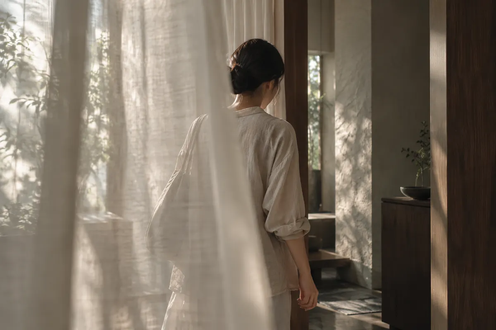
01 / ARRIVE
外のことは、ここまで。
扉の向こうに、予定のない時間。
LEAVE THE EVERYDAY
何かをするためじゃなく、
何もしないための時間があってもいい。
A LITTLE TIME TO RETURN TO YOURSELF
THE NAGI EXPERIENCE
予定を忘れて、
自分に戻るまで。

01 / ARRIVE
扉の向こうに、予定のない時間。
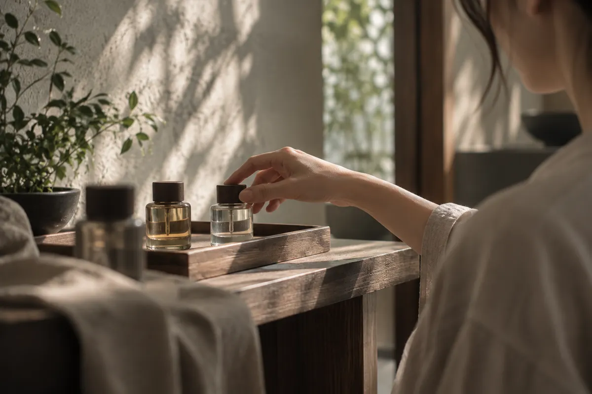
02 / CHOOSE
香りも、会話の距離も。
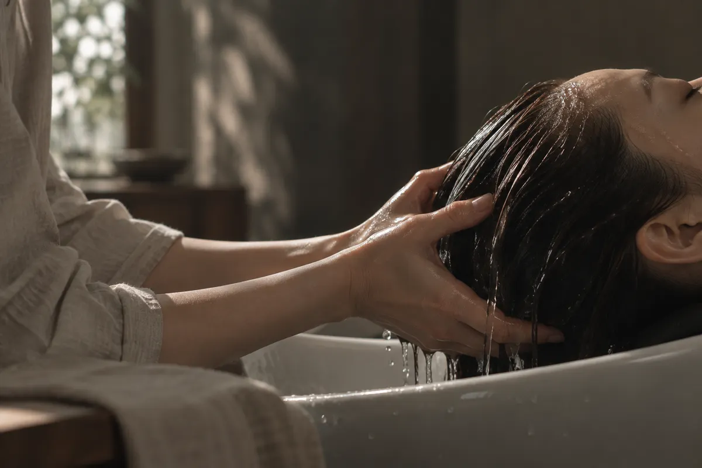
03 / RELEASE
考えることを、少しずつ手放して。
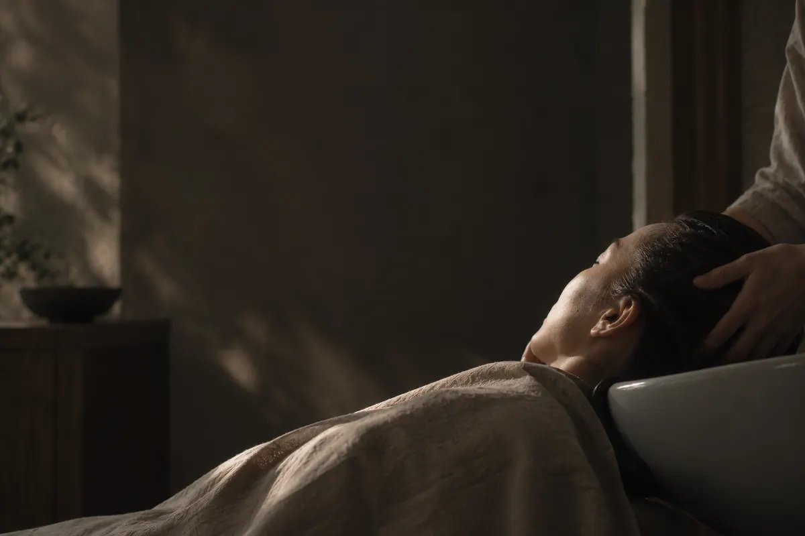
04 / REST
話さず、急がず、ただここに。
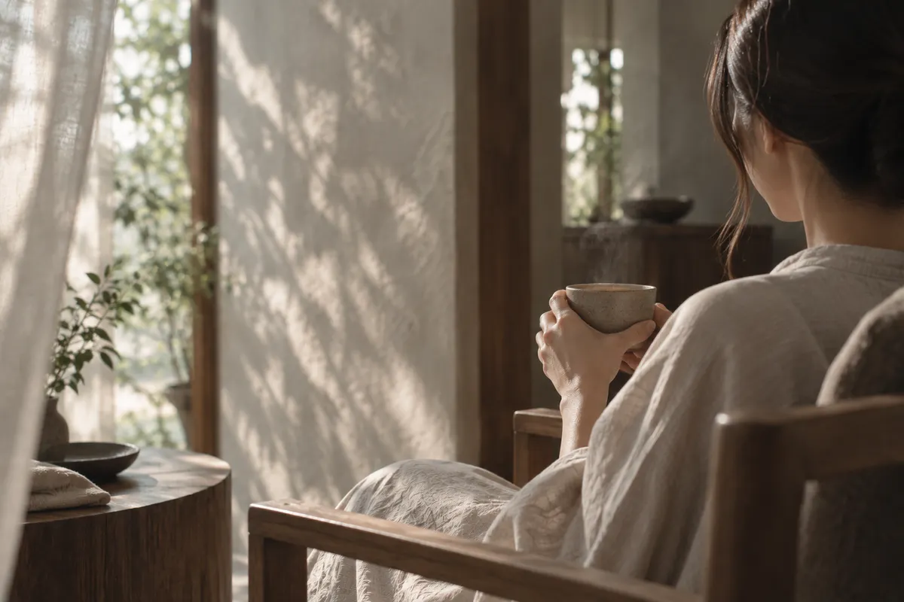
05 / RETURN
温かいお茶と、静けさの余韻。
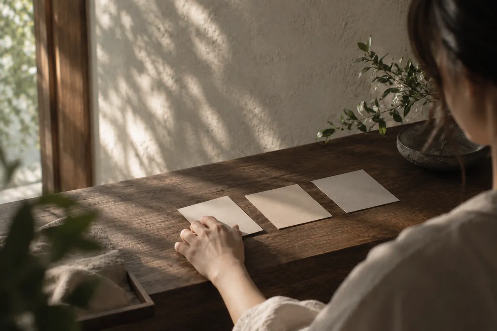
YOUR QUIET. YOUR CHOICE.
QUIET CHOICE
話さないことに、気をつかわなくていい。
その日の気分で、会話の距離を選べます。
THE SPACE BETWEEN
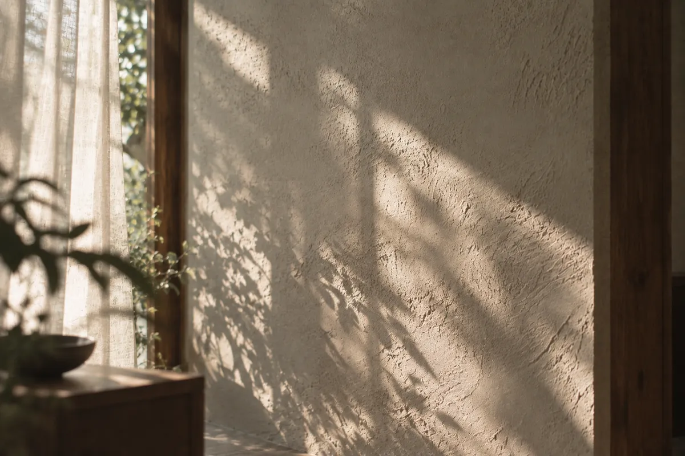
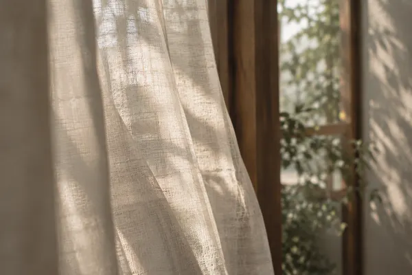
光のうつろい。
布の手ざわり。
水の音。
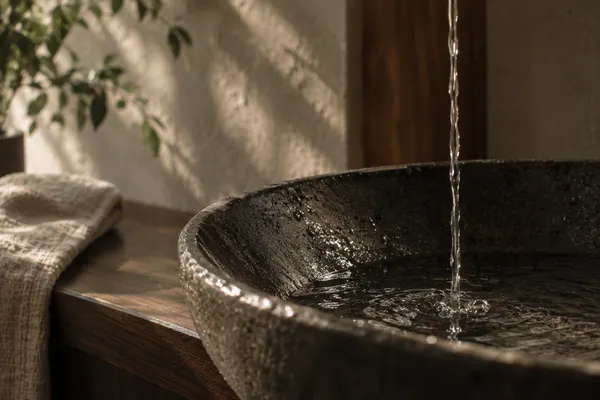
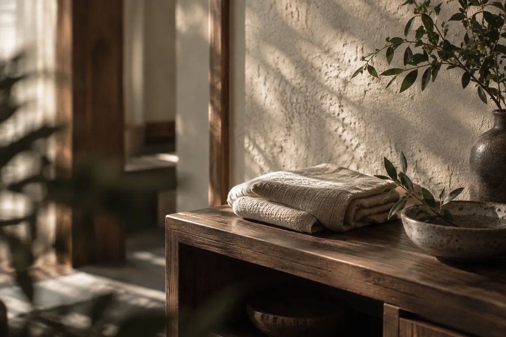
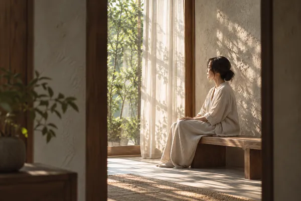
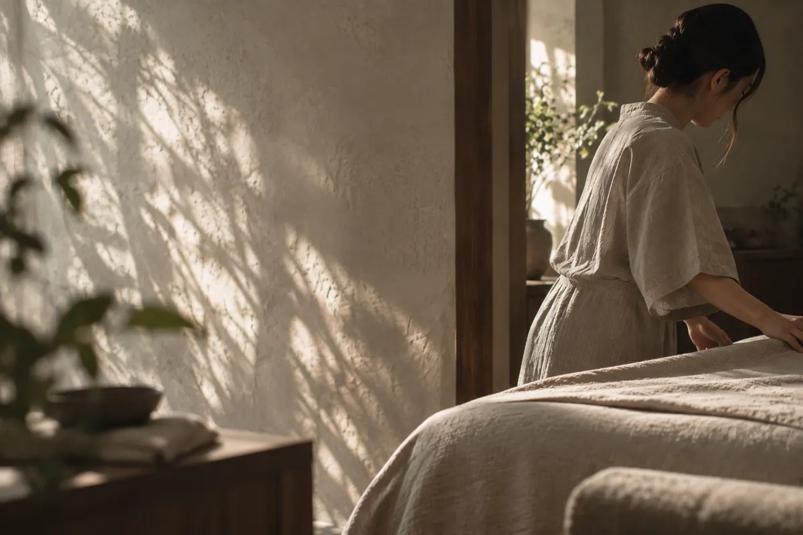
BEFORE YOU ARRIVE
施術だけではなく、
光、音、香り、会話の距離まで。
75分を邪魔するものを、
できるだけ少なくしています。
BEFORE YOUR VISIT
SILENT・MINIMUM・TALKの3つから、その日の気分に合う会話スタイルを選ぶコンセプトです。話さず過ごしたい気持ちも大切にします。
初回75分・¥8,800のメニューを設定しています。初めての方の受付や事前確認の流れは、実店舗としての運営時に決定する項目です。
メイクをしたまま受けられるか、お直し設備の有無は未設定です。この作品では実際のご来店・施術の受付を行っていません。
変更・キャンセルの期限や料金は未設定です。実際の予約受付を始める場合は、予約前に確認できるよう条件を掲載します。
対応する支払い方法は未設定です。このサイトに決済機能はなく、お支払いが発生することはありません。
A QUIET MOMENT, JUST FOR YOU
75 min FIRST VISIT ¥8,800
ご予約案内を見る